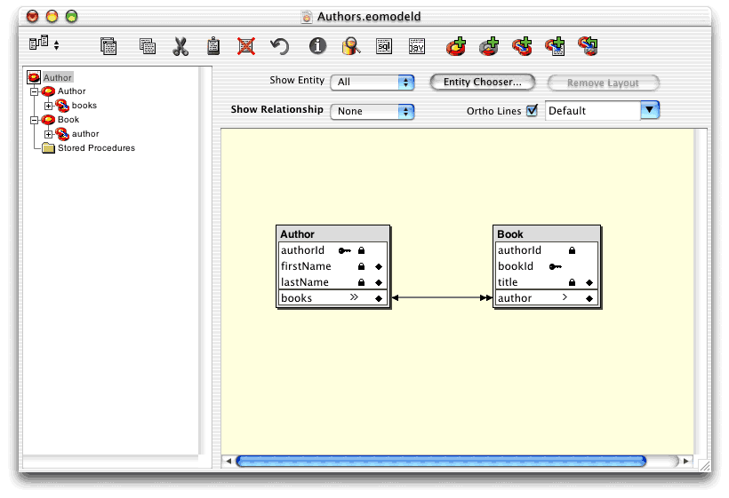

| PATH |

To complete the Authors model, you'll add the Book entity to it. After defining the entity's attributes, you'll add the BOOK table to the Authors database. Then you'll add the relationships between Author and Book.
In this section you'll create the Book entity and define its attributes, including its primary and foreign keys.
Authors.eomodeld in
EOModeler.Book in the
Name and Class text fields.BOOK in the
Table Name text field.The Book entity
has one major attribute, title,
which stores a book's title. It also needs a primary key attribute, bookId,
to ensure that all the rows in the BOOK table are unique. Finally,
it requires an additional attribute, a foreign key, which is used
to link a book to its author. This last attribute is named authorId.
Add
the title attribute by
following these steps:
title.TITLE as
the column name.char as the
external type.50 in the
External Width text field.Add
the bookId attribute:
bookId.BOOK_ID as
the column name.int as the
external data type.Add
the authorId attribute
(this is the foreign key that relates a book to its author):
authorId.AUTHOR_ID as
the column name.int as the
external type.bookId row
of the Book Attributes list, click in the column with a key as its heading
so that a key appears in the row.bookId row
so that the diamond disappears (the value of the bookId attribute
is not relevant to the application).authorId a
hidden attribute.For the same reason that bookId is
irrelevant, the value of authorId is
of no interest to the application.
Click in the diamond
column of the authorId row
in the Book Attributes list, so that the diamond disappears.
In this section, you'll create the BOOK table, just like you created the AUTHOR table in "Creating the AUTHOR Table".
Now that the Book entity is defined, you will relate it to the Author entity.
The relationship between Author and Book is bidirectional. Each author can have many books, while each book has only one author.
Create the relationships by following these steps:
Author.authorId to Book.authorId.This
creates two relationships: a to-many relationship from Author to
Book, using authorId as
the linking attribute; and a to-one relationship from Book to Author,
again using authorId as
the linking attribute.
Figure 12-1 graphically depicts the two relationships. Book is linked to Author by a single-headed arrow, meaning that a book can have one author. Whereas Author is linked to Book by a double-headed arrow, meaning that an author can have more than one book.
Figure 12-1 Relationships in the Authors model
Deletion can become complex due to the relationships between entities. For example, if you delete an Author object, what should happen to the Book objects associated with it? You can define the behavior you desire by using delete rules in your model.
Each relationship has a delete rule that tells Enterprise Objects what to do when you try to delete the source object. The following are the possible behaviors:
null.)In the case of deletion of a book, it makes the most sense
to delete the book and remove it from the Author entity's books relationship.
This is an example of the Nullify delete rule. If you examine the author relationship
of the Book entity, you'll see that it is already configured with
the Nullify delete rule selected. Therefore, you don't need to
alter it. However, that default is not appropriate when an author
is deleted.
Follow these steps to configure the books relationship
of the Authors entity so that all of an author's books are deleted
when the author is removed from the database:
books relationship
of the Author entity.Books.eomodeld.
© 2001 Apple Computer, Inc.